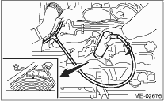

CAUTION:
After warming-up, engine becomes very hot. Be careful not to burn yourself at measurement.
1. Before checking the ignition timing, check the following item:
(1) Check that the air cleaner element is free from clogging, that the spark plugs are in good condition, and that the hoses are connected properly.
(2) Check that the engine malfunction indicator light is not illuminated.
2. Warm-up the engine.
3. When inspecting the ignition timing, connect the timing light to the #1 cylinder spark plug cord, and shine the timing mark with the timing light.
4. Start the engine and check the ignition timing at the following idle speeds.
Ignition timing [BTDC/rpm]:
13°±10°/650

If the timing is not correct, check the ignition control system.